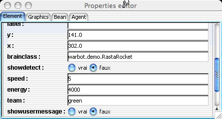

Congratulations! You
have succeeded in running the Warbot simulation.
Congratulations! You
have succeeded in running the Warbot simulation.
You have certainly noticed that, after a finite (maybe long ;-) time, the two home bases are destroyed.
In order to understand what has happened, let us focus on the behaviours of
our agents. To do that, let us stop the simulation with the  button.
Let us select an agent on the Warbot window, for instance a green launcher,
and select,
on top of the Warbot window, the lens icon .
This makes a window to appear, showing us the properties of our agent, including
its class:
button.
Let us select an agent on the Warbot window, for instance a green launcher,
and select,
on top of the Warbot window, the lens icon .
This makes a window to appear, showing us the properties of our agent, including
its class:

The RastaRocket launchers fire against any perceived ennemy, and eat any perceived hamburger. Their behavior is defined in a Java file . Let us have a glance at the source files of this behavior. We first see that it is a subclass of Brain, and that two methods are redefined in the class:
The behavior of our launcher is then to review all the perceived entities. For each of them, he will test its type, using the predefined method getPerceptType() which returns a String giving the kind of the percept ("Home, "Food", "RocketLauncher", "Explorer",...), test its team, using the predefined method getTeam() which returns a String that the agent can compare to its own team, in order to decide whether he fires against, using the predefined method launchRocket(...) or if he eats it, using the predefined method eat().
This behavior is not really cooperative, but we can notice that our agent does nothing when he perceives agents from his own team, and that he does neither send nor receive any message. Then, it would be easy to add a few things to this behavior to make it more cooperative.
Let us now focus on the red explorer. Its property window shows an additional property:

This agent is defined in Python. As this language is an interpreted one, a script file is part of the agent, whose brainclass is PythonBrain. Let us edit this file.
We can notice that, once again, two methods are defined: activate() and doIt(). We alsio ee a end() method whose action is to print bye bye. The activate() allows, as usually in MadKit, the agent to announce his venue. The doIt() method defines what is the actual behavior of the agent.
The behavior of opur explorer is, like for the previous kind of agent, to review all the percepts. For each of them, it tests its kind by calling the getPerceptType() method, which is called both in Python and in Java, and its team, by the getTeam() method. This agent is interested by homes: when it perceives one, and after checking its team, then il informs all the launchers which belong to its team of the position of the enemy home, through a call to self.broadcast(groupName,"launcher","homeposition",str(self.getX()),str(self.getY())). If it sees food, it eats it, by calling the eat() method. When there is nothing to eat, it moves in the window, by calling the move() method.
This agent is a little bit more cooperative than the previous one, as it sends messages. The agents which receive these messages are the red launchers. Their brainclass is HomeKiller and their behavior is defined in a Java class .
The doIt() method is similar to the RastaRocket method (fire any entity which is not from its team), with only an additional action when it receives a message from the explorer, which says to go near the enemy home and fire against it. This behavior is not a sophistiated one, but is complementary of the previous one, then they fit each other inside the same team.
The remaining kind of agent , defined in a Java class , is the green explorer, which is in the same team as the RastaRocket launcher: its behavior is "ant-like": it looks for food, it bounces against obstacles, and bring back home the food it found (eating only 10% of it). It is not more a cooperative behavior than its launcher 's one: so they fit each other inside the team ;-).
updated Sunday 3 April, 2005 18:10